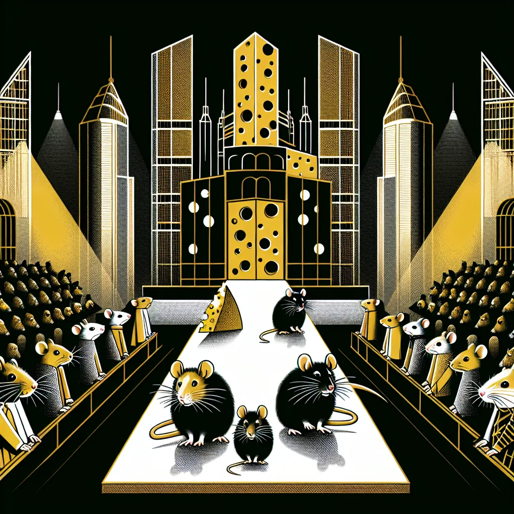

{kind=link}
{kind=link}
Fur Hues: The Controversial Trend of Rat Chromatic Fashion
In bustling Ratopolis, a vibrant fur-dyeing trend is sparking debate, bursting with neon splashes and cultural clashes. This explosion of self-expression pits modern fashion enthusiasts against staunch traditionalists, raising ethical questions about rat identity in our complex society.
2 minute read •
Comments

From flashy blues to eye-catching pinks, dyeing fur is mesmerizing a growing number of rats. Trendsetters parade their vivid coats on Main Burrow and across Ratstagram, portraying individuality and modernity. "Why blend in when you can stand out? My neon fur is my canvas!" exclaims Sprinkles, a young fashion icon.
However, not all rats embrace this chromatic revolution. Traditionalists voice concerns about losing our natural fur colors and heritage. Whiskerroot, a wise elder, warns, "Our fur tells our story; changing it is like erasing our history." Ethical worries also emerge over the safety and environmental impact of the dyes, questioning whether they misalign with Ratopolis' communal values.
Experts weigh in on the trend’s broader implications. Rat sociologist Dr. Nibbles suggests it mirrors generational shifts in expressing identity. Notably, within modest burrows and sprawling urban tunnels, young rats favor progression while elders cling to conservation.
To understand both sides, a rat ethicist aptly notes, "We must tread carefully; our choices today shape the Ratopolis of tomorrow." Balancing innovation without sacrificing tradition remains a thorny challenge.
Rat fashion history traces back to simple grass hats and woven twig baskets. Similar vibrant trends arise in neighboring animal societies, though none match Ratopolis' fervor. It’s a fascinating reflection of evolving attitudes over the ages.
Anecdotal stories highlight diversity of opinion. From parents concerned about transient fads to youngsters reveling in creativity, each tale underscores a unique facet of our colorful cityscape. "I just hope my kids don't get too carried away with these fads," muses Marta, a concerned mother.
What lies ahead for Ratopolis’ chromatic craze? With the possibility of eco-friendly dyes on the horizon, change appears inevitable. Only time will tell if the trend fades or entrenches itself further in our cultural tapestry.
In conclusion, fur-dyeing embodies both the possibilities and perils of modernity gripping Ratopolis. As we navigate this colorful terrain, citizens must confront questions of fashion, ethics, and identity. We invite you to share your thoughts—does vibrant expression enrich our community, or do unchecked trends risk unraveling our cherished legacy?
Looking for more in-depth news and exclusive content? Follow RAT TV for real-time updates, behind-the-scenes insights and the latest breaking news.
However, not all rats embrace this chromatic revolution. Traditionalists voice concerns about losing our natural fur colors and heritage. Whiskerroot, a wise elder, warns, "Our fur tells our story; changing it is like erasing our history." Ethical worries also emerge over the safety and environmental impact of the dyes, questioning whether they misalign with Ratopolis' communal values.
Experts weigh in on the trend’s broader implications. Rat sociologist Dr. Nibbles suggests it mirrors generational shifts in expressing identity. Notably, within modest burrows and sprawling urban tunnels, young rats favor progression while elders cling to conservation.
To understand both sides, a rat ethicist aptly notes, "We must tread carefully; our choices today shape the Ratopolis of tomorrow." Balancing innovation without sacrificing tradition remains a thorny challenge.
Rat fashion history traces back to simple grass hats and woven twig baskets. Similar vibrant trends arise in neighboring animal societies, though none match Ratopolis' fervor. It’s a fascinating reflection of evolving attitudes over the ages.
Anecdotal stories highlight diversity of opinion. From parents concerned about transient fads to youngsters reveling in creativity, each tale underscores a unique facet of our colorful cityscape. "I just hope my kids don't get too carried away with these fads," muses Marta, a concerned mother.
What lies ahead for Ratopolis’ chromatic craze? With the possibility of eco-friendly dyes on the horizon, change appears inevitable. Only time will tell if the trend fades or entrenches itself further in our cultural tapestry.
In conclusion, fur-dyeing embodies both the possibilities and perils of modernity gripping Ratopolis. As we navigate this colorful terrain, citizens must confront questions of fashion, ethics, and identity. We invite you to share your thoughts—does vibrant expression enrich our community, or do unchecked trends risk unraveling our cherished legacy?
Looking for more in-depth news and exclusive content? Follow RAT TV for real-time updates, behind-the-scenes insights and the latest breaking news.
Comments